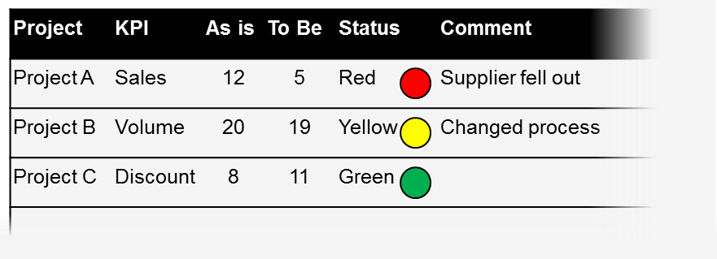
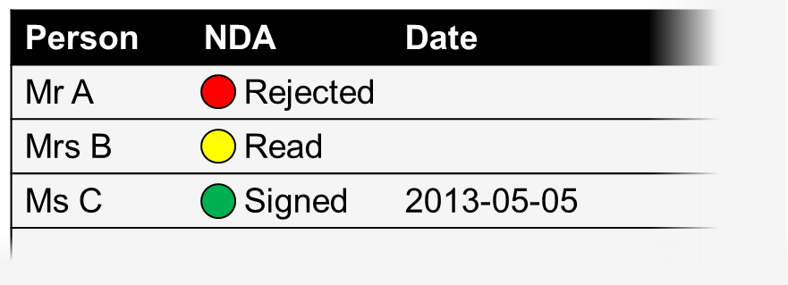

Strategic decisions rely on quick data collection. I don't have time to wait for IT to build a new report.
In FetchIt, you define the data you need with a few mouse clicks. No installation needed for any user, just go!
Communicative as email.
I spend half of my time running after people before starting to analyze it. Communication is poor.
FetchIt sends out requests and reminders, and makes sure the recipient understands. You know at any time what's going on.
Secure as ERP.
Data for critical business decisions is stored in spreadsheets/ email. I'm afraid of a data audit or leak, but without some shortcuts we wouldn't get things done.
FetchIt encrypts data before storing it either in a secure cloud, or in your company's established infrastructure.
Status tracking should be easy. In reality, it takes a lot of time to
receive an up-to-date qualitative and quantitative assessment of a
project portfolio with many projects and multiple project
owners.
Project
Status
Comment
...
Project A
Red
Supplier fell out
...
Project B
Yellow
Changed process
...
Project C
Green
...
...
...
...
...
Use FetchIt to free up time for actual analysis of the data instead of running after people to get it.
You identify the data sources, and FetchIt addresses and reminds them
via email.
The data providers have easy access to FetchIt without installation.
They can commit to your data request, or send back questions for clarification.
You have an accurate overview of the progress at any time in FetchIt.
FetchIt allows you to reject reports that don't meet your quality criteria
with a single click.
There isn't a modern company that's not steered by KPIs. Identifying and addressing
all the right sources for a comprehensive management dashboard with a large number of KPIs
is an error-prone process.

Ensure a high-quality deliverable by a consistent end-to-end data gathering process with FetchIt.
In FetchIt, you define the dashboard structure and data providers once.
FetchIt addresses and reminds them
via email, they can commit to your data request, or send back questions for clarification.
The data providers can drag & drop data from Excel, other legacy systems,
or enter manually.
You have an accurate overview of the progress at any time in FetchIt and
can send reminders easilty.
FetchIt allows you to export the collected data at any time for data analysis.
Special projects require special attention — and often a separate NDA.
You need to make sure that you know who signed it and when. You don't have time
for a solution that requires IT administration for every new user.

Ensure compliance and traceability of the NDA process using FetchIt.
In FetchIt, you insert the NDA.
You identify the people who you want to sign the NDA, and FetchIt notifies them
via email.
The recipients have easy access to FetchIt without installation.
You see at any time who signed the NDA and when.
FetchIt allows you to create a compliance report easily with a single click.